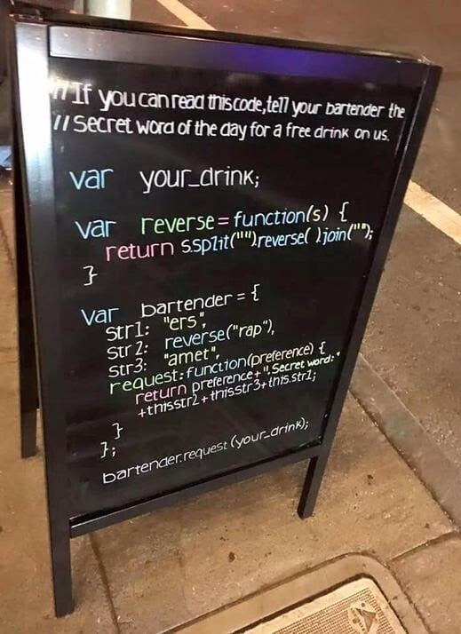
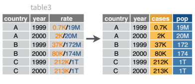

import pandas as pd
df = pd.read_csv("https://raw.githubusercontent.com/srvanderplas/stat-computing-r-python/main/data/number-formats.csv")23 Working with Strings
One of the most common types of “messy” data involves strings. If the data is input by humans, well, … we suck at spelling [1], typing, and data input, so… it’s going to be messy. But, another type of messy data involves situations where multiple variables are stored in the same column, or where the same variable is stored across two different columns. Usually, when this type of messy data occurs, the data is stored in a string/character variable.
This chapter will teach you how to work with both messy spelling/data entry and multiple values in a single string, but we’ll focus on the second - you’ll learn the tools to handle the first case along the way.
Objectives
- Use functions to perform find-and-replace operations
- Use functions to split string data into multiple columns/variables
- Use functions to join string data from multiple columns/variables into a single column/variable

23.1 Basic Operations
Nearly always, when multiple variables are stored in a single column, they are stored as character variables. There are many different “levels” of working with strings in programming, from simple find-and-replaced of fixed (constant) strings to regular expressions, which are extremely powerful (and extremely complicated).
Some people, when confronted with a problem, think “I know, I’ll use regular expressions.” Now they have two problems. - Jamie Zawinski

The stringr cheatsheet by RStudio may be helpful as you complete tasks related to this section - it may even be useful in Python as the 2nd page has a nice summary of regular expressions.
x is the string or vector of strings, pattern is a pattern to be found within the string, a and b are indexes, and encoding is a string encoding, such as UTF8 or ASCII.
| Task | R | Python |
|---|---|---|
Replace pattern with replacement
|
base: stringr: |
pandas: x.str.replace(pattern, replacement) (not vectorized over pattern or replacement) |
| Convert case |
base: stringr: |
pandas: x.str.lower(), x.str.upper()
|
| Strip whitespace from start/end |
base: stringr: |
pandas: x.str.strip()
|
| Pad strings to a specific length |
base: stringr: |
pandas: x.str.pad()
|
| Test if the string contains a pattern |
base: stringr: |
pandas: x.str.contains(pattern)
|
| Count how many times a pattern appears in the string |
base: stringi: stringr: |
pandas: x.str.count(pattern)
|
| Find the first appearance of the pattern within the string |
base: stringr: |
pandas: x.str.find(pattern)
|
| Find all appearances of the pattern within the string |
base: stringr: |
pandas: x.str.findall(pattern)
|
| Detect a match at the start/end of the string |
base: use regular expr. stringr: |
pandas: x.str.startswith(pattern) , x.str.endswith(pattern)
|
| Subset a string from index a to b |
base: stringr: |
pandas: x.str.slice(a, b, step)
|
| Convert string encoding |
base: stringr: |
pandas: x.str.encode(encoding)
|
In Table 23.1, multiple functions are provided for e.g. common packages and situations. Pandas methods are specifically those which work in some sort of vectorized manner. Base methods (in R) do not require additional packages, where stringr methods require the stringr package, which is included in the tidyverse1.
23.2 Converting strings to numbers
One of the most common tasks when reading in and tidying messy data is that numeric-ish data can come in many forms that are read (by default) as strings. The data frame below provides an example of a few types of data which may be read in in unexpected ways. How do we tell R or Python that we want all of these columns to be treated as numbers?
| int_col | float_col | mix_col | missing_col | money_col | eu_numbers | boolean_col | custom | |
|---|---|---|---|---|---|---|---|---|
| 0 | 1 | 1.1 | a | 1 | £1,000.00 | 1.000.000,00 | True | Y |
| 1 | 2 | 1.2 | 2 | 2 | £2,400.00 | 2.000.342,00 | False | Y |
| 2 | 3 | 1.3 | 3 | 3 | £2,400.00 | 3.141,59 | True | N |
| 3 | 4 | 4.7 | 4 | nan | £2,400.00 | 34,25 | True | N |
Numbers, currencies, dates, and times are written differently based on what country you’re in [2]. In computer terms, this is the locale, and it affects everything from how your computer formats the date/time to what character set it will try to use to display things [3].
Locales are something you may want to skip if you’re just starting out and you don’t work with code written by people in other countries. If you’re collaborating internationally, however, you may want to at least skim the section below to be aware of potential issues when locale-related problems crop up.
If you’ve never had to deal with the complexities of working on a laptop designed for one country using another country’s conventions, know that it isn’t necessarily the easiest thing to do.
Advanced: Locales
Find your locale
-
Type
Get-WinSystemLocaleinto your CMD or powershell terminal. -
(10.4 and later) and Type
localeinto your terminal
Get set up to work with locales
While this isn’t required, it may be useful and is definitely good practice if you’re planning to work with data generated internationally.
This article tells you how to set things up in linux . The biggest difference in other OS is going to be how to install new locales, so here are some instructions on that for other OS.
- Installing languages
- Change locales. Installing or creating new locales seems to be more complicated, and since I do not have a mac, I can’t test this out easily myself.
We’ll use Table 23.2 to explore different string operations focused specifically on converting strings to numbers.
df <- read.csv("https://raw.githubusercontent.com/srvanderplas/stat-computing-r-python/main/data/number-formats.csv", colClasses = "character")By default, R tries to outsmart us and read the data in as numbers. I’ve disabled this behavior by setting colClasses='character' so that you can see how these functions work… but in general, R seems to be a bit more willing to try to guess what you want. This can be useful, but can also be frustrating when you don’t know how to disable it.
Converting Columns Using Your Best Guess
Both R and Python have ways to “guess” what type a column is and read the data in as that type. When we initially read in the data above, I had to explicitly disable this behavior in R. If you’re working with data that is already read in, how do you get R and Python to guess what type something is?
Here, R gets everything “right” except the eu_numbers, money_col, and custom cols, which makes sense - these contain information that isn’t clearly numeric or doesn’t match the default numeric formatting on my machine (which is using en_US.UTF-8 for almost everything). If we additionally want R to handle mix_col, we would have to explicitly convert to numeric, causing the a to be converted to NA
library(dplyr)
library(readr)
df_guess <- type_convert(df)
str(df_guess)
## 'data.frame': 4 obs. of 8 variables:
## $ int_col : int 1 2 3 4
## $ float_col : num 1.1 1.2 1.3 4.7
## $ mix_col : chr "a" "2" "3" "4"
## $ missing_col: num 1 2 3 NA
## $ money_col : chr "£1,000.00" "£2,400.00" "£2,400.00" "£2,400.00"
## $ eu_numbers : chr "1.000.000,00" "2.000.342,00" "3.141,59" "34,25"
## $ boolean_col: logi TRUE FALSE TRUE TRUE
## $ custom : chr "Y" "Y" "N" "N"The type_convert function has a locale argument; readr includes a locale() function that you can pass to type_convert that allows you to define your own locale. Because we have numeric types structured from at least two locales in this data frame, we would have to specifically read the data in specifying which columns we wanted read with each locale.
library(dplyr)
library(readr)
fixed_df <- type_convert(df)
fixed_df2 <- type_convert(df, locale = locale(decimal_mark = ',', grouping_mark = '.'))
# Replace EU numbers col with the type_convert results specifying that locale
fixed_df$eu_numbers = fixed_df$eu_numbers
str(fixed_df)
## 'data.frame': 4 obs. of 8 variables:
## $ int_col : int 1 2 3 4
## $ float_col : num 1.1 1.2 1.3 4.7
## $ mix_col : chr "a" "2" "3" "4"
## $ missing_col: num 1 2 3 NA
## $ money_col : chr "£1,000.00" "£2,400.00" "£2,400.00" "£2,400.00"
## $ eu_numbers : chr "1.000.000,00" "2.000.342,00" "3.141,59" "34,25"
## $ boolean_col: logi TRUE FALSE TRUE TRUE
## $ custom : chr "Y" "Y" "N" "N"Similarly, Python does basically the same thing as R: mix_col, money_col, and custom are all left as strings, while floats, integers, and logical values are handled correctly.
fixed_df = df.infer_objects()
fixed_df.dtypes
## int_col int64
## float_col float64
## mix_col object
## missing_col float64
## money_col object
## eu_numbers object
## boolean_col bool
## custom object
## dtype: objectAs in R, we can set the locale in Python to change how things are read in.
from babel.numbers import parse_decimal
# Convert eu_numbers column specifically
fixed_df['eu_numbers'] = fixed_df['eu_numbers'].apply(lambda x: parse_decimal(x, locale = 'it'))
fixed_df['eu_numbers'] = pd.to_numeric(fixed_df['eu_numbers'])
fixed_df.dtypes
## int_col int64
## float_col float64
## mix_col object
## missing_col float64
## money_col object
## eu_numbers float64
## boolean_col bool
## custom object
## dtype: object
Converting Columns Directly
Obviously, we can also convert some strings to numbers using type conversion functions that we discussed in Section 8.4. This is fairly easy in R, but a bit more complex in Python, because Python has several different types of ‘missing’ or NA variables that are not necessarily compatible.
Here, we use the across helper function from dplyr to convert all of the columns to numeric. Note that the last 3 columns don’t work here, because they contain characters R doesn’t recognize as numeric characters.
library(dplyr)
df_numeric <- mutate(df, across(everything(), as.numeric))
str(df_numeric)
## 'data.frame': 4 obs. of 8 variables:
## $ int_col : num 1 2 3 4
## $ float_col : num 1.1 1.2 1.3 4.7
## $ mix_col : num NA 2 3 4
## $ missing_col: num 1 2 3 NA
## $ money_col : num NA NA NA NA
## $ eu_numbers : num NA NA NA NA
## $ boolean_col: num NA NA NA NA
## $ custom : num NA NA NA NAdf_numeric = df.apply(pd.to_numeric, errors='coerce')
df_numeric.dtypes
## int_col int64
## float_col float64
## mix_col float64
## missing_col float64
## money_col float64
## eu_numbers float64
## boolean_col bool
## custom float64
## dtype: object
Example: Converting Y/N data
The next thing we might want to do is convert our custom column so that it has 1 instead of Y and 0 instead of N. There are several ways we can handle this process:
- We could use factors/categorical variables, which have numeric values “under the hood”, but show up as labeled.
- We could (in this particular case) test for equality with “Y”, but this approach would not generalize well if we had more than 2 categories.
- We could take a less nuanced approach and just find-replace and then convert to a number.
Some of these solutions are more kludgy than others, but I’ve used all 3 approaches when dealing with categorical data in the past, depending on what I wanted to do with it afterwards.
library(stringr) # work with strings easily
fixed_df = fixed_df %>%
mutate(
# factor approach
custom1 = factor(custom, levels = c("N", "Y"), labels = c("Y", "N")),
# test for equality
custom2 = (custom == "Y"),
# string replacement
custom3 = str_replace_all(custom, c("Y" = "1", "N" = "0")) %>%
as.numeric()
)
str(fixed_df)
## 'data.frame': 4 obs. of 11 variables:
## $ int_col : int 1 2 3 4
## $ float_col : num 1.1 1.2 1.3 4.7
## $ mix_col : chr "a" "2" "3" "4"
## $ missing_col: num 1 2 3 NA
## $ money_col : chr "£1,000.00" "£2,400.00" "£2,400.00" "£2,400.00"
## $ eu_numbers : chr "1.000.000,00" "2.000.342,00" "3.141,59" "34,25"
## $ boolean_col: logi TRUE FALSE TRUE TRUE
## $ custom : chr "Y" "Y" "N" "N"
## $ custom1 : Factor w/ 2 levels "Y","N": 2 2 1 1
## $ custom2 : logi TRUE TRUE FALSE FALSE
## $ custom3 : num 1 1 0 0We’ve already done a brief demonstration of string methods in Python when we trimmed off the £ character. In this situation, it’s better to use the pandas replace method, which allows you to pass in a list of values and a list of replacements.
# Categorical (factor) approach
fixed_df['custom1'] = fixed_df['custom'].astype("category") # convert to categorical variable
# Equality/boolean approach
fixed_df['custom2'] = fixed_df['custom'] == "Y"
# string replacement
fixed_df['custom3'] = fixed_df['custom'].replace(["Y", "N"], ["1", "0"]).astype("int")
fixed_df.dtypes
## int_col int64
## float_col float64
## mix_col object
## missing_col float64
## money_col object
## eu_numbers float64
## boolean_col bool
## custom object
## custom1 category
## custom2 bool
## custom3 int64
## dtype: object23.3 Find and replace
Another way to fix some issues is to just find-and-replace the problematic characters. This is not always the best solution2, and may introduce bugs if you use the same code to analyze new data with characters you haven’t anticipated, but in so many cases it’s also the absolute easiest, fastest, simplest way forward and easily solves many different problems.
I’ll show you how to correct all of the issues reading in the data using solutions shown above, but please do consider reading [4] so that you know why find-and-replace isn’t (necessarily) the best option for locale-specific formatting.
Example: find and replace
Let’s start with the money column.
In R, parse_number() handles the money column just fine - the pound sign goes away and we get a numeric value. This didn’t work by default with type_convert, but as long as we mutate and tell R we expect a number, things work well. Then, as we did above, we can specify the locale settings so that decimal and grouping marks are handled correctly even for countries which use ‘,’ for decimal and ‘.’ for thousands separators.
fixed_df = df %>%
type_convert() %>% # guess everything
mutate(money_col = parse_number(money_col),
eu_numbers = parse_number(eu_numbers,
locale = locale(decimal_mark = ',',
grouping_mark = '.')))In python, a similar approach doesn’t work out, because the pound sign is not handled correctly.
from babel.numbers import parse_decimal
fixed_df = df.infer_objects()
# Convert eu_numbers column
fixed_df['eu_numbers'] = fixed_df['eu_numbers'].apply(lambda x: parse_decimal(x, locale = 'it'))
fixed_df['eu_numbers'] = pd.to_numeric(fixed_df['eu_numbers'])
# Convert money_col
fixed_df['money_col'] = fixed_df['money_col'].apply(lambda x: parse_decimal(x, locale = 'en_GB'))
## babel.numbers.NumberFormatError: '£1,000.00' is not a valid decimal number
fixed_df.dtypes
## int_col int64
## float_col float64
## mix_col object
## missing_col float64
## money_col object
## eu_numbers float64
## boolean_col bool
## custom object
## dtype: object# Remove £ from string
fixed_df['money_col'] = fixed_df['money_col'].str.removeprefix("£")
# Then parse the number
fixed_df['money_col'] = fixed_df['money_col'].apply(lambda x: parse_decimal(x))
# Then convert to numeric
fixed_df['money_col'] = pd.to_numeric(fixed_df['money_col'])
fixed_df.dtypes
## int_col int64
## float_col float64
## mix_col object
## missing_col float64
## money_col float64
## eu_numbers float64
## boolean_col bool
## custom object
## dtype: object23.3.1 Example: Locale find-and-replace
We could also handle the locale issues using find-and-replace, if we wanted to…
Note that str_remove is shorthand for str_replace(x, pattern, ""). There is a little bit of additional complexity in switching “,” for “.” and vice versa - we have to change “,” to something else first, so that we can replace “.” with “,”. This is not elegant but it does work. It also doesn’t generalize - it will mess up numbers formatted using the US/UK convention, and it won’t handle numbers formatted using other conventions from other locales.
fixed_df = df %>%
type_convert() %>% # guess everything
mutate(money_col = str_remove(money_col, "£") %>% parse_number(),
eu_numbers = str_replace_all(eu_numbers,
c("," = "_",
"\\." = ",",
"_" = ".")) %>%
parse_number())from babel.numbers import parse_decimal
fixed_df = df.infer_objects()
# Convert eu_numbers column:
# Replace . with nothing (remove .), then
# Replace , with .
fixed_df['eu_numbers'] = fixed_df['eu_numbers'].\
str.replace('\.', '').\
str.replace(',', '.')
fixed_df['eu_numbers'] = pd.to_numeric(fixed_df['eu_numbers'])
## ValueError: Unable to parse string "1.000.000.00" at position 0
# Convert money_col
fixed_df['money_col'] = fixed_df['money_col'].\
str.removeprefix("£").\
str.replace(',', '')
fixed_df['money_col'] = pd.to_numeric(fixed_df['money_col'])
fixed_df.dtypes
## int_col int64
## float_col float64
## mix_col object
## missing_col float64
## money_col float64
## eu_numbers object
## boolean_col bool
## custom object
## dtype: object
fixed_df
## int_col float_col mix_col ... eu_numbers boolean_col custom
## 0 1 1.1 a ... 1.000.000.00 True Y
## 1 2 1.2 2 ... 2.000.342.00 False Y
## 2 3 1.3 3 ... 3.141.59 True N
## 3 4 4.7 4 ... 34.25 True N
##
## [4 rows x 8 columns]23.4 Separating multi-variable columns
Another common situation is to have multiple variables in one column. This can happen, for instance, when conducting a factorial experiment: Instead of having separate columns for each factor, researchers sometimes combine several different factors into a single label for a condition to simplify data entry.
In pandas, we use x.str.split() to split columns in a DataFrame, in R we use the tidyr package’s separate_wider_xxx() series of functions.
Example: Separating columns
We’ll use the table3 object included in dplyr for this example. You can load it in R and then load the reticuate package to be able to access the object in python as r.table3.

library(dplyr)
library(tidyr)
library(reticulate) # so we can access table3 in python
data(table3)
separate_wider_delim(table3, rate, delim = "/", names = c('cases', 'pop'), cols_remove = F)
## # A tibble: 6 × 5
## country year cases pop rate
## <chr> <dbl> <chr> <chr> <chr>
## 1 Afghanistan 1999 745 19987071 745/19987071
## 2 Afghanistan 2000 2666 20595360 2666/20595360
## 3 Brazil 1999 37737 172006362 37737/172006362
## 4 Brazil 2000 80488 174504898 80488/174504898
## 5 China 1999 212258 1272915272 212258/1272915272
## 6 China 2000 213766 1280428583 213766/1280428583table3 = r.table3
table3[['cases', 'pop']] = table3.rate.str.split("/", expand = True)
table3
## country year rate cases pop
## 0 Afghanistan 1999.0 745/19987071 745 19987071
## 1 Afghanistan 2000.0 2666/20595360 2666 20595360
## 2 Brazil 1999.0 37737/172006362 37737 172006362
## 3 Brazil 2000.0 80488/174504898 80488 174504898
## 4 China 1999.0 212258/1272915272 212258 1272915272
## 5 China 2000.0 213766/1280428583 213766 1280428583This uses python’s multiassign capability. Python can assign multiple things at once if those things are specified as a sequence (e.g. cases, pop). In this case, we split the rate column and assign two new columns, essentially adding two columns to our data frame and labeling them at the same time.
23.5 Joining columns
It’s also not uncommon to need to join information stored in two columns into one column. A good example of a situation in which you might need to do this is when we store first and last name separately and then need to have a ‘name’ column that has both pieces of information together.
Example: Joining columns
We’ll use the table5 object included in dplyr for this example. You can load it in R and then load the reticuate package to be able to access the object in python as r.table5.

library(dplyr)
library(tidyr)
library(reticulate) # so we can access table3 in python
data(table5)
unite(table5, col = yyyy, c(century, year), sep = "", remove = F) %>%
# convert all columns to sensible types
readr::type_convert()
## # A tibble: 6 × 5
## country yyyy century year rate
## <chr> <dbl> <dbl> <chr> <chr>
## 1 Afghanistan 1999 19 99 745/19987071
## 2 Afghanistan 2000 20 00 2666/20595360
## 3 Brazil 1999 19 99 37737/172006362
## 4 Brazil 2000 20 00 80488/174504898
## 5 China 1999 19 99 212258/1272915272
## 6 China 2000 20 00 213766/1280428583import pandas as pd
table5 = r.table5
# Concatenate the two columns with string addition
table5['yyyy'] = table5.century + table5.year
# convert to number
table5['yyyy'] = pd.to_numeric(table5.yyyy)
table5
## country century year rate yyyy
## 0 Afghanistan 19 99 745/19987071 1999
## 1 Afghanistan 20 00 2666/20595360 2000
## 2 Brazil 19 99 37737/172006362 1999
## 3 Brazil 20 00 80488/174504898 2000
## 4 China 19 99 212258/1272915272 1999
## 5 China 20 00 213766/1280428583 200023.6 Regular Expressions
Matching exact strings is easy - it’s just like using find and replace.
human_talk <- "blah, blah, blah. Do you want to go for a walk?"
dog_hears <- str_extract(human_talk, "walk")
dog_hears
## [1] "walk"
XKCD comics by Randall Munroe CC-A-NC 2.5.
A regular expression is a sequence of characters that specify a match pattern to search for in a larger text [5]. Regular expressions may be used to specify find or find-and-replace operations on strings.
Regular expressions can be extremely useful for cleaning and extracting data: they can replace misspellings, extract pieces of information from longer strings, and flexibly handle different ways people may input data. They may be incredibly powerful, but they can also be complicated to create and the expressions themselves may be cryptic and nearly impossible to decode.
But, if you can master even a small amount of regular expression notation, you’ll have exponentially more power to do good (or evil) when working with strings. You can get by without regular expressions if you’re creative, but often they’re much simpler.
Here are some useful regular expressions3:
- Validate a phone number [6]:
^\(*\d{3}\)*( |-)*\d{3}( |-)*\d{4}$ - Check for first and last names [7]:
^[\w'\-,.][^0-9_!¡?÷?¿/\\+=@#$%ˆ&*(){}|~<>;:[\]]{2,}$
(This is a tricky proposition and this regular expression does make some assumptions about what characters are valid for names.) - Match a 5 or 9 digit zip code:
(^\d{5}$)|(^\d{9}$)|(^\d{5}-\d{4}$)
These tasks are all well-suited for regular expressions. More complicated tasks, such as validating an email address, are less suited for regular expressions, though there are regular expressions that exist [8] for that task.
I’ve assembled a YouTube playlist of different explanations of regular expressions, if you prefer that type of tutorial.
The following demonstrations are intended for advanced students: if you are just learning how to program, you may want to come back to these when you need them.
There is also an excellent site which helps you learn regular expressions via interactive tutorials, [9]. Another useful tool is [10]
23.6.1 Regular Expression Basics
You may find it helpful to follow along with this section using this web app built to test R regular expressions for R. A similar application for Perl compatible regular expressions (used by SAS and Python) can be found here. The subset of regular expression syntax we’re going to cover here is fairly limited (and common to SAS, Python, and R, with a few adjustments), but you can find regular expressions to do just about anything string-related. As with any tool, there are situations where it’s useful, and situations where you should not use a regular expression, no matter how much you want to.
Here are the basics of regular expressions:
-
[]enclose sets of characters
Ex:[abc]will match any single charactera,b,c-
-specifies a range of characters (A-zmatches all upper and lower case letters) - to match
-exactly, precede with a backslash (outside of[]) or put the-last (inside[])
-
-
.matches any character (except a newline) - To match special characters, escape them using
\(in most languages) or\\(in R). So\.or\\.will match a literal.,\$or\\$will match a literal$.
num_string <- "phone: 123-456-7890, nuid: 12345678, ssn: 123-45-6789"
ssn <- str_extract(num_string, "[0-9][0-9][0-9]-[0-9][0-9]-[0-9][0-9][0-9][0-9]")
ssn
## [1] "123-45-6789"In python, a regular expression is indicated by putting the character ‘r’ right before the quoted expression. This tells python that any backslashes in the string should be left alone – if R had that feature, we wouldn’t have to escape all the backslashes!
import re
num_string = "phone: 123-456-7890, nuid: 12345678, ssn: 123-45-6789"
ssn = re.search(r"[0-9][0-9][0-9]-[0-9][0-9]-[0-9][0-9][0-9][0-9]", num_string)
ssn
## <re.Match object; span=(42, 53), match='123-45-6789'>23.6.2 Specifying repetition
Listing out all of those numbers can get repetitive, though. How do we specify repetition?
-
*means repeat between 0 and inf times -
+means 1 or more times -
?means 0 or 1 times – most useful when you’re looking for something optional -
{a, b}means repeat betweenaandbtimes, whereaandbare integers.bcan be blank. So[abc]{3,}will matchabc,aaaa,cbbaa, but notab,bb, ora. For a single number of repeated characters, you can use{a}. So{3, }means “3 or more times” and{3}means “exactly 3 times”
library(stringr)
str_extract("banana", "[a-z]{1,}") # match any sequence of lowercase characters
## [1] "banana"
str_extract("banana", "[ab]{1,}") # Match any sequence of a and b characters
## [1] "ba"
str_extract_all("banana", "(..)") # Match any two characters
## [[1]]
## [1] "ba" "na" "na"
str_extract("banana", "(..)\\1") # Match a repeated thing
## [1] "anan"num_string <- "phone: 123-456-7890, nuid: 12345678, ssn: 123-45-6789, bank account balance: $50,000,000.23"
ssn <- str_extract(num_string, "[0-9]{3}-[0-9]{2}-[0-9]{4}")
ssn
## [1] "123-45-6789"
phone <- str_extract(num_string, "[0-9]{3}.[0-9]{3}.[0-9]{4}")
phone
## [1] "123-456-7890"
nuid <- str_extract(num_string, "[0-9]{8}")
nuid
## [1] "12345678"
bank_balance <- str_extract(num_string, "\\$[0-9,]+\\.[0-9]{2}")
bank_balance
## [1] "$50,000,000.23"import re
re.search(r"[a-z]{1,}", "banana") # match any sequence of lowercase characters
## <re.Match object; span=(0, 6), match='banana'>
re.search(r"[ab]{1,}", "banana") # Match any sequence of a and b characters
## <re.Match object; span=(0, 2), match='ba'>
re.findall(r"(..)", "banana") # Match any two characters
## ['ba', 'na', 'na']
re.search(r"(..)\1", "banana") # Match a repeated thing
## <re.Match object; span=(1, 5), match='anan'>import re
num_string = "phone: 123-456-7890, nuid: 12345678, ssn: 123-45-6789, bank account balance: $50,000,000.23"
ssn = re.search(r"[0-9]{3}-[0-9]{2}-[0-9]{4}", num_string)
ssn
## <re.Match object; span=(42, 53), match='123-45-6789'>
phone = re.search(r"[0-9]{3}.[0-9]{3}.[0-9]{4}", num_string)
phone
## <re.Match object; span=(7, 19), match='123-456-7890'>
nuid = re.search(r"[0-9]{8}", num_string)
nuid
## <re.Match object; span=(27, 35), match='12345678'>
bank_balance = re.search(r"\$[0-9,]+\.[0-9]{2}", num_string)
bank_balance
## <re.Match object; span=(77, 91), match='$50,000,000.23'>23.6.3 Matching Locations
There are also ways to “anchor” a pattern to a part of the string (e.g. the beginning or the end)
-
^has multiple meanings:- if it’s the first character in a pattern,
^matches the beginning of a string - if it follows
[, e.g.[^abc],^means “not” - for instance, “the collection of all characters that aren’t a, b, or c”.
- if it’s the first character in a pattern,
-
$means the end of a string
Combined with pre and post-processing, these let you make sense out of semi-structured string data, such as addresses.
address <- "1600 Pennsylvania Ave NW, Washington D.C., 20500"
house_num <- str_extract(address, "^[0-9]{1,}")
# Match everything alphanumeric up to the comma
street <- str_extract(address, "[A-z0-9 ]{1,}")
street <- str_remove(street, house_num) %>% str_trim() # remove house number
city <- str_extract(address, ",.*,") %>% str_remove_all(",") %>% str_trim()
zip <- str_extract(address, "[0-9-]{5,10}$") # match 5 and 9 digit zip codesPython match objects contain 3 things: .span(), which has the start and end positions of the match, .string, which contains the original string passed into the function, and .group(), which contains the actual matching portion of the string.
import re
address = "1600 Pennsylvania Ave NW, Washington D.C., 20500"
house_num = re.search(r"^[0-9]{1,}", address).group()
# Match everything alphanumeric up to the comma
street = re.search(r"[A-z0-9 ]{1,}", address).group()
street = street.replace(house_num, "").strip() # remove house number
city = re.search(",.*,", address).group().replace(",", "").strip()
zip = re.search(r"[0-9-]{5,10}$", address).group() # match 5 and 9 digit zip codes23.6.4 Capturing Information
-
()are used to capture information. So([0-9]{4})captures any 4-digit number -
a|bwill select a or b.
If you’ve captured information using (), you can reference that information using backreferences.
In most languages, backreferences look like this: \1 for the first reference, \9 for the ninth. In R, backreferences are \\1 through \\9.
In R, the \ character is special, so you have to escape it. So in R, \\1 is the first reference, and \\2 is the second, and so on.
phone_num_variants <- c("(123) 456-7980", "123.456.7890", "+1 123-456-7890")
phone_regex <- "\\+?[0-9]{0,3}? ?\\(?([0-9]{3})?\\)?.?([0-9]{3}).?([0-9]{4})"
# \\+?[0-9]{0,3} matches the country code, if specified,
# but won't take the first 3 digits from the area code
# unless a country code is also specified
# \\( and \\) match literal parentheses if they exist
# ([0-9]{3})? captures the area code, if it exists
# .? matches any character
# ([0-9]{3}) captures the exchange code
# ([0-9]{4}) captures the 4-digit individual code
str_extract(phone_num_variants, phone_regex)
## [1] "(123) 456-7980" "123.456.7890" "+1 123-456-7890"
str_replace(phone_num_variants, phone_regex, "\\1\\2\\3")
## [1] "1234567980" "1234567890" "1234567890"
# We didn't capture the country code, so it remained in the string
human_talk <- "blah, blah, blah. Do you want to go for a walk? I think I'm going to treat myself to some ice cream for working so hard. "
dog_hears <- str_extract_all(human_talk, "walk|treat")
dog_hears
## [[1]]
## [1] "walk" "treat"import pandas as pd
import re
phone_num_variants = pd.Series(["(123) 456-7980", "123.456.7890", "+1 123-456-7890"])
phone_regex = re.compile("\+?[0-9]{0,3}? ?\(?([0-9]{3})?\)?.?([0-9]{3}).?([0-9]{4})")
# \+?[0-9]{0,3} matches the country code, if specified,
# but won't take the first 3 digits from the area code
# unless a country code is also specified
# \( and \) match literal parentheses if they exist
# ([0-9]{3})? captures the area code, if it exists
# .? matches any character
# ([0-9]{3}) captures the exchange code
# ([0-9]{4}) captures the 4-digit individual code
res = phone_num_variants.str.findall(phone_regex)
res2 = phone_num_variants.str.replace(phone_regex, "\\1\\2\\3")
## ValueError: Cannot use a compiled regex as replacement pattern with regex=False
# We didn't capture the country code, so it remained in the string
human_talk = "blah, blah, blah. Do you want to go for a walk? I think I'm going to treat myself to some ice cream for working so hard. "
dog_hears = re.findall(r"walk|treat", human_talk)
dog_hears
## ['walk', 'treat']23.6.5 Putting it all Together
We can test our regular expressions to ensure that they are specific enough to pull out what we want, while not pulling out other similar information:
strings <- c("abcdefghijklmnopqrstuvwxyzABAB",
"banana orange strawberry apple",
"ana went to montana to eat a banana",
"call me at 432-394-2873. Do you want to go for a walk? I'm going to treat myself to some ice cream for working so hard.",
"phone: (123) 456-7890, nuid: 12345678, bank account balance: $50,000,000.23",
"1600 Pennsylvania Ave NW, Washington D.C., 20500")
phone_regex <- "\\+?[0-9]{0,3}? ?\\(?([0-9]{3})?\\)?.?([0-9]{3}).([0-9]{4})"
dog_regex <- "(walk|treat)"
addr_regex <- "([0-9]*) ([A-z0-9 ]{3,}), ([A-z\\. ]{3,}), ([0-9]{5})"
abab_regex <- "(..)\\1"
tibble(
text = strings,
phone = str_detect(strings, phone_regex),
dog = str_detect(strings, dog_regex),
addr = str_detect(strings, addr_regex),
abab = str_detect(strings, abab_regex))
## # A tibble: 6 × 5
## text phone dog addr abab
## <chr> <lgl> <lgl> <lgl> <lgl>
## 1 abcdefghijklmnopqrstuvwxyzABAB FALSE FALSE FALSE TRUE
## 2 banana orange strawberry apple FALSE FALSE FALSE TRUE
## 3 ana went to montana to eat a banana FALSE FALSE FALSE TRUE
## 4 call me at 432-394-2873. Do you want to go for a walk… TRUE TRUE FALSE FALSE
## 5 phone: (123) 456-7890, nuid: 12345678, bank account b… TRUE FALSE FALSE FALSE
## 6 1600 Pennsylvania Ave NW, Washington D.C., 20500 FALSE FALSE TRUE FALSEimport pandas as pd
import re
strings = pd.Series(["abcdefghijklmnopqrstuvwxyzABAB",
"banana orange strawberry apple",
"ana went to montana to eat a banana",
"call me at 432-394-2873. Do you want to go for a walk? I'm going to treat myself to some ice cream for working so hard.",
"phone: (123) 456-7890, nuid: 12345678, bank account balance: $50,000,000.23",
"1600 Pennsylvania Ave NW, Washington D.C., 20500"])
phone_regex = re.compile(r"\(?([0-9]{3})?\)?.?([0-9]{3}).([0-9]{4})")
dog_regex = re.compile(r"(walk|treat)")
addr_regex = re.compile(r"([0-9]*) ([A-z0-9 ]{3,}), ([A-z\\. ]{3,}), ([0-9]{5})")
abab_regex = re.compile(r"(..)\1")
pd.DataFrame({
"text": strings,
"phone": strings.str.contains(phone_regex),
"dog": strings.str.contains(dog_regex),
"addr": strings.str.contains(addr_regex),
"abab": strings.str.contains(abab_regex)})
## text phone ... addr abab
## 0 abcdefghijklmnopqrstuvwxyzABAB False ... False True
## 1 banana orange strawberry apple False ... False True
## 2 ana went to montana to eat a banana False ... False True
## 3 call me at 432-394-2873. Do you want to go for... True ... False False
## 4 phone: (123) 456-7890, nuid: 12345678, bank ac... True ... False False
## 5 1600 Pennsylvania Ave NW, Washington D.C., 20500 False ... True False
##
## [6 rows x 5 columns]23.7 References
[1]
P. Norvig, “How to write a spelling corrector. Norvig.com,” Feb. 01, 2007. [Online]. Available: http://norvig.com/spell-correct.html. [Accessed: Mar. 08, 2023]
[2]
M. Ashour, “A Concise Guide to Number Localization,” Phrase. Feb. 2022 [Online]. Available: https://phrase.com/blog/posts/number-localization/. [Accessed: Jul. 25, 2022]
[3]
Wikipedia Contributors, “Locale (computer software),” Wikipedia. Apr. 2022 [Online]. Available: https://en.wikipedia.org/w/index.php?title=Locale_(computer_software)&oldid=1082900932. [Accessed: Jul. 25, 2022]
[4]
A. Herrmann, “How to deal with international data formats in Python,” herrmann.tech. Feb. 2021 [Online]. Available: https://herrmann.tech/en/blog/2021/02/05/how-to-deal-with-international-data-formats-in-python.html. [Accessed: Jul. 25, 2022]
[5]
“Regular expression,” Wikipedia. Feb. 28, 2023 [Online]. Available: https://en.wikipedia.org/w/index.php?title=Regular_expression&oldid=1142135804. [Accessed: Mar. 09, 2023]
[6]
J. Atwood, “Regex use vs. Regex abuse. Coding horror,” Feb. 16, 2005. [Online]. Available: https://blog.codinghorror.com/regex-use-vs-regex-abuse/. [Accessed: Mar. 09, 2023]
[7]
CristianGuerrero, “Answer to "regular expression for first and last name". Stack overflow,” Aug. 24, 2017. [Online]. Available: https://stackoverflow.com/a/45871742. [Accessed: Mar. 09, 2023]
[8]
L. Ristic, “Validate email addresses with regular expressions in JavaScript. Stack abuse,” Oct. 14, 2021. [Online]. Available: https://stackabuse.com/validate-email-addresses-with-regular-expressions-in-javascript/. [Accessed: Mar. 09, 2023]
[9]
RegexOne, “RegexOne.” [Online]. Available: https://regexone.com/. [Accessed: Apr. 20, 2023]
[10]
Lea Verou, “Reg explained. /a(b)/g,” 2017. [Online]. Available: https://projects.verou.me/regexplained/. [Accessed: Apr. 20, 2023]
Many functions from
stringrhave somewhat faster functional equivalents in thestringipackage, but thestringipackage has a less “tidy” API, so it may be worth the slight slowdown to usestringrif your data isn’t huge because your code will be more readable.↩︎It’s particularly hackish when you’re working with locale-specific settings [4], and in many cases you can handle locale issues much more elegantly.↩︎
Note that these are written in generic regular expression text - to use them in R you will have to escape each and every
\with another\.↩︎